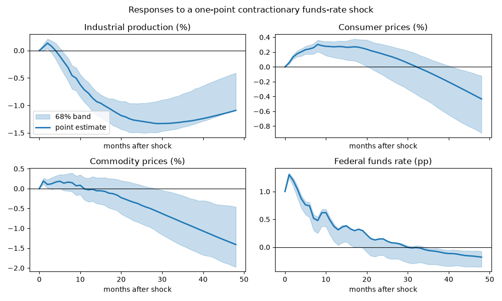
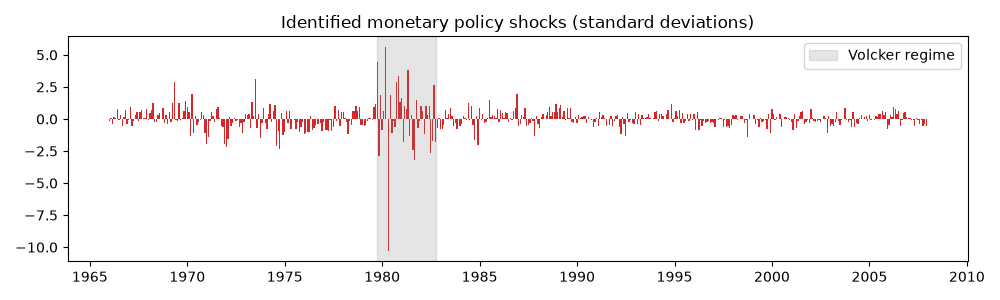

Note
Go to the end to download the full example code.
Monetary policy shocks in a recursive VAR#
The workhorse monetary VAR of Christiano, Eichenbaum and Evans (1999): a monthly system in industrial production, consumer prices, commodity prices and the federal funds rate, identified recursively with the policy rate ordered last. The identifying assumption is that the Fed sees the current month’s activity and prices when it sets the rate, while activity and prices respond to the rate only with a lag.
The exercise follows the paper’s workflow: pull the data, choose the lag order, check the reduced form is stable and its residuals are clean, identify, trace the responses with residual-bootstrap bands, and read the price puzzle off the response of consumer prices.
The sample is 1965-2007, ending before the funds rate reached the zero lower bound, where a linear VAR in the rate stops being a model of policy.
Setup#
The gallery helper fetch resolves the FRED key from the
FRED_API_KEY environment variable and aligns the series on one
monthly index. Activity and prices enter as 100 times their logs, so
responses read as percent deviations; the funds rate is in percentage
points.
import matplotlib.pyplot as plt
import numpy as np
from cultivars.multivariate.reduced_form.vector_autoregression import VAR, VARResult
from cultivars.multivariate.structural.zero_restrictions import RecursiveSVAR, SVARResult
from _fred import fetch
data = fetch(
{"ip": "INDPRO", "cpi": "CPIAUCSL", "pcom": "PPIACO", "ffr": "FEDFUNDS"},
start="1965-01-01",
end="2007-12-01",
units={"ip": "log", "cpi": "log", "pcom": "log"},
)
data[["ip", "cpi", "pcom"]] *= 100.0
names = tuple(data.columns)
print(data.describe().round(2))
ip cpi pcom ffr
count 516.00 516.00 516.00 516.00
mean 406.30 454.34 445.14 6.44
std 33.31 60.45 51.30 3.27
min 341.18 344.30 345.95 0.98
25% 381.15 400.41 408.56 4.60
50% 401.33 469.73 463.86 5.56
75% 437.08 507.41 483.09 8.23
max 462.87 535.40 518.74 19.10
Lag order#
CEE use twelve lags on monthly data and so do we, but the choice should be made in view of the criteria rather than by habit. The Akaike and Hannan-Quinn criteria tolerate long lags; Schwarz does not. Twelve lags is the paper’s choice and is defensible whenever the Akaike curve is still flat or falling there, because a monthly system should be allowed a full year of dynamics.
selection = VAR(data.to_numpy(), order=1, names=names).lag_order_selection(max_lags=14)
print(selection.to_table())
print("Selected:", selection.selected)
Lag order selection
================================================================================
Observations: 502 Maximum lags: 14
Consensus: none
--------------------------------------------------------------------------------
p AIC BIC HQIC FPE
0 18.2234 18.2570 18.2366 82097111.9979
1 -5.6999 -5.5319 -5.6340 0.0033
2 -6.0601 -5.7575* -5.9414 0.0023
3 -6.1574* -5.7204 -5.9860* 0.0021*
4 -6.1386 -5.5671 -5.9144 0.0022
5 -6.1376 -5.4317 -5.8607 0.0022
6 -6.1108 -5.2704 -5.7811 0.0022
7 -6.0824 -5.1076 -5.6999 0.0023
8 -6.1072 -4.9979 -5.6720 0.0022
9 -6.0953 -4.8516 -5.6074 0.0023
10 -6.1041 -4.7259 -5.5634 0.0022
11 -6.0979 -4.5852 -5.5044 0.0023
12 -6.1124 -4.4652 -5.4661 0.0022
13 -6.1217 -4.3401 -5.4227 0.0022
14 -6.1466 -4.2306 -5.3949 0.0021
================================================================================
An asterisk marks each criterion's minimum. Every order was scored on the same
sample, so entries within a column are comparable; FPE is on a determinant
scale, so entries across columns are not.
Selected: {'aic': 3, 'bic': 2, 'hqic': 3, 'fpe': 3}
Reduced form#
The reduced form is a VAR(12) with a constant. Stability is the first thing to check: the impulse responses of an unstable system do not decay and the bootstrap below would be meaningless.
order = 12
var = VAR(data.to_numpy(), order=order, names=names).fit()
stability = var.stability_check()
print(f"Largest companion root: {stability.max_modulus:.4f}, stable: {stability.is_stable}")
print(var.residual_diagnostics(portmanteau_lags=24, arch_lags=12))
Largest companion root: 0.9993, stable: True
Residual diagnostics
================================================================================
Observations: 504 Equations: 4
--------------------------------------------------------------------------------
test statistic df p-value
portmanteau(24) 292.091 188 0.0000
jarque-bera[ip] 118.546 2 0.0000
jarque-bera[cpi] 243.614 2 0.0000
jarque-bera[pcom] 857.747 2 0.0000
jarque-bera[ffr] 25367.404 2 0.0000
arch-lm(12)[ip] 34.725 12 0.0005
arch-lm(12)[cpi] 49.629 12 0.0000
arch-lm(12)[pcom] 90.533 12 0.0000
arch-lm(12)[ffr] 64.513 12 0.0000
================================================================================
Small p-values reject the null named by each test. A rejected portmanteau means
the lag order is too short, which invalidates every other quantity the result
reports.
Identification#
The recursive ordering (ip, cpi, pcom, ffr) puts the policy rate last. The policy shock is the funds-rate residual orthogonalized on the other three, scaled so that the impact response of the rate is one percentage point.
svar = RecursiveSVAR(var, order=names).identify()
print(svar.summary())
horizon = 48
irf = svar.irf(horizon)
policy = list(svar.shock_names).index("ffr")
irf_policy = irf[:, :, policy] / irf[0, list(svar.names).index("ffr"), policy]
Structural VAR (recursive)
================================================================================
Scheme: recursive Identified shocks: 4 of 4
Variables: 4 Observations: 504
--------------------------------------------------------------------------------
impact of ip cpi pcom ffr
ip 0.6413 0.0000 0.0000 0.0000
cpi 0.0104 0.2118 0.0000 0.0000
pcom 0.0226 0.3995 0.6035 0.0000
ffr 0.1119 0.0076 -0.0002 0.4750
================================================================================
Recursive ordering ip -> cpi -> pcom -> ffr: each variable responds on impact
only to shocks at or before its own position. Permuting the ordering changes the
answer; that is the identifying assumption, not a numerical artifact.
Shocks are normalized to unit variance, so impact-column entries are responses
to a one-standard-deviation structural shock.
Residual bootstrap#
Analytic bands for structural responses are available but fragile at long horizons; the standard practice is a residual bootstrap. Each replication resamples the reduced-form residuals with replacement, rebuilds the series from the estimated coefficients, refits the VAR and re-identifies. The bands are percentile bands of the resampled responses, normalized the same way as the point estimate.
def rebuild(result: VARResult, resid: np.ndarray) -> np.ndarray:
"""Simulate a VAR path from estimated coefficients and resampled residuals."""
k, p = result.k_endog, result.order
history = np.asarray(result.endog[:p], dtype=float).copy()
out = np.empty((p + resid.shape[0], k))
out[:p] = history
coefficients = result.coefficients
const = result.deterministic[0] if result.deterministic.size else np.zeros(k)
for t in range(p, out.shape[0]):
y = const.copy()
for lag in range(1, p + 1):
y += coefficients[lag - 1] @ out[t - lag]
out[t] = y + resid[t - p]
return out
def bootstrap_irf(result: VARResult, n_boot: int, seed: int) -> np.ndarray:
"""Percentile-band bootstrap of the normalized policy response."""
rng = np.random.default_rng(seed)
resid = result.resid - result.resid.mean(axis=0)
draws = np.empty((n_boot, horizon + 1, result.k_endog))
ffr = list(result.names).index("ffr")
for b in range(n_boot):
sample = resid[rng.integers(0, resid.shape[0], size=resid.shape[0])]
path = rebuild(result, sample)
boot_var = VAR(path, order=result.order, names=result.names).fit()
boot_svar: SVARResult = RecursiveSVAR(boot_var, order=result.names).identify()
response = boot_svar.irf(horizon)[:, :, ffr]
draws[b] = response / response[0, ffr]
return draws
draws = bootstrap_irf(var, n_boot=200, seed=20260101)
lower, upper = np.percentile(draws, [16, 84], axis=0)
Responses to a contractionary policy shock#
Output falls with a hump, commodity prices fall quickly, the funds rate itself mean-reverts within about a year. Consumer prices are the interesting panel: in the CEE ordering they typically rise for several months before falling, the price puzzle, which is why commodity prices are in the system at all – they absorb much of it.
fig, axes = plt.subplots(2, 2, figsize=(10, 6), sharex=True)
labels = {
"ip": "Industrial production (%)",
"cpi": "Consumer prices (%)",
"pcom": "Commodity prices (%)",
"ffr": "Federal funds rate (pp)",
}
steps = np.arange(horizon + 1)
for ax, (i, name) in zip(axes.ravel(), enumerate(svar.names), strict=True):
ax.fill_between(steps, lower[:, i], upper[:, i], color="C0", alpha=0.25, label="68% band")
ax.plot(steps, irf_policy[:, i], color="C0", lw=2, label="point estimate")
ax.axhline(0.0, color="k", lw=0.8)
ax.set_title(labels[name])
ax.set_xlabel("months after shock")
axes[0, 0].legend(loc="lower left")
fig.suptitle("Responses to a one-point contractionary funds-rate shock")
fig.tight_layout()

Forecast error variance decomposition#
How much of the variation in each variable is the policy shock responsible for? The CEE finding is: a modest share of output at business-cycle horizons, very little of prices. The decomposition is a (horizon + 1, k, k) array of shares; we read the policy column.
h = 6 share of variance due to the policy shock ip: 0.4%, cpi: 7.4%, pcom: 0.6%, ffr: 61.3%
h = 12 share of variance due to the policy shock ip: 5.5%, cpi: 7.5%, pcom: 0.4%, ffr: 44.7%
h = 24 share of variance due to the policy shock ip: 25.3%, cpi: 3.9%, pcom: 0.5%, ffr: 34.2%
h = 48 share of variance due to the policy shock ip: 40.8%, cpi: 2.0%, pcom: 5.4%, ffr: 29.0%
Historical decomposition#
The structural shocks are serially uncorrelated by construction; the recovered policy shocks should look like innovations, with the Volcker disinflation visible as a cluster of large positive values in 1979-82.
shocks = svar.structural_shocks()
dates = data.index[order:]
fig, ax = plt.subplots(figsize=(10, 3))
ax.bar(dates, shocks[:, policy], width=25, color="C3")
ax.set_title("Identified monetary policy shocks (standard deviations)")
ax.axvspan("1979-10-01", "1982-10-01", color="grey", alpha=0.2, label="Volcker regime")
ax.legend(loc="upper right")
fig.tight_layout()

What to take away#
The recursive scheme is transparent and the bootstrap bands make clear which responses are and are not pinned down by a sample of this length. What it cannot do is validate the timing assumption that makes the policy equation last; the sign-restriction and heteroskedasticity examples in this gallery identify the same shock without it, and the comparison is the real test of the CEE result.